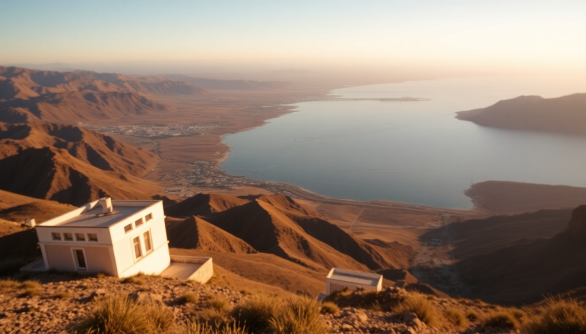

Best Day Trips from Lima: Paracas, Ballestas Islands & Huacachina

I’d read conflicting advice about whether you could actually do Paracas, the Ballestas Islands, and Huacachina in a single day from Lima. After trying it myself, I can tell you: yes, it’s doable, but only if you’re smart about timing and willing to skip the fluff. Here’s exactly how I pulled it off—and what I’d do differently.
Why combine Paracas, Ballestas Islands, and Huacachina in one day?
Lima’s traffic is brutal, so the last thing you want is two separate day trips eating up your whole week. The trio of Paracas (a coastal desert town), the Ballestas Islands (often called the “poor man’s Galápagos”), and Huacachina (the only real desert oasis in the Americas) sit along the same southbound highway. You can hit all three in about 14 hours if you start early. I left my hotel in Miraflores at 5:00 AM and was back by 9:30 PM. Yes, it’s a long day—but it’s worth it for the sheer variety.
How do you get from Lima to Paracas?
Most people book a tour that includes transport, but I prefer to rent a car for flexibility. That said, the bus option works fine if you’re solo. I used Cruz del Sur from their terminal in Javier Prado—it’s about 3.5 hours to Paracas, comfortable seats, and they show movies in English. If you drive yourself, take the Panamericana Sur highway (Route 1S) south. The road is well-paved but monotonous; stock up on snacks at a Tambo gas station before you leave Lima.
- Driving time: 3 to 3.5 hours from Miraflores to Paracas
- Bus cost: ~30 PEN ($8 USD) one way with Cruz del Sur
- Parking in Paracas: Free along the waterfront near the dock, but arrive before 8 AM to snag a spot
- Fuel stop: The Repsol station just past Pisco has clean bathrooms—rare on that route
What’s the Ballestas Islands boat tour really like?
The Ballestas tour is the anchor of this day. Boats leave from the Paracas dock between 7:30 AM and 8:00 AM—no afternoon departures, so you have to be early. I booked directly with Ballestas Tours (the company with the blue kiosk at the dock entrance) for 50 PEN ($13 USD) per person. The ride is about 2 hours round-trip, including the stop at the Candelabra geoglyph (a giant trident carved into the hillside—nobody knows who made it).
The islands themselves are noisy, smelly, and incredible. Thousands of sea lions bark from the rocks, Humboldt penguins waddle on ledges, and blue-footed boobies dive-bomb the water. You’ll get wet—the boat rocks hard even on calm days—so wear a windbreaker and leave your phone in a dry bag. The guides speak Spanish and English, but the commentary is mostly pointing and shouting over the engine.
- Tour duration: 2 hours on the water (7:30 AM to 9:30 AM)
- Price: 50–70 PEN per person (cash only)
- Wildlife guaranteed: Sea lions, penguins, Peruvian pelicans, cormorants
- Bring: Sunscreen, a hat, seasickness pills if you’re prone
Is Huacachina worth the hype after the islands?
Honestly, I was skeptical. Huacachina is a tiny village built around a murky green lagoon, surrounded by towering sand dunes. It’s touristy—think ATVs blasting reggaeton and backpackers drinking cheap rum. But the dune buggy ride and sandboarding are genuinely fun. After the Ballestas boat, I drove from Paracas to Huacachina in about 1 hour 15 minutes (the road is straight and flat). I parked at the entrance near Hotel Mossone and walked to the dune buggy operators.
I went with Banana Adventures for the 4:00 PM sunset tour—80 PEN ($21 USD) for 2 hours of dune bashing and sandboarding. The buggies are loud and the drivers are aggressive; you’ll feel like you’re in a roller coaster. Sandboarding is harder than snowboarding—the boards are waxed but the sand is soft, so you mostly slide on your belly. The sunset view from the highest dune, Cerro Blanco, is the payoff. It’s silent up there, and you can see the oasis glowing below.
- Drive from Paracas to Huacachina: 1 hour 15 minutes
- Dune buggy + sandboarding: 80–100 PEN per person
- Best operator: Banana Adventures or Red Dunes Tours (both at the main plaza)
- Pro tip: Bring a buff or bandana—sand gets everywhere, including your camera lens
Where should you eat between the islands and the dunes?
You’ll have about 3–4 hours between the Ballestas boat and the Huacachina tour. I used this window for lunch in Ica (the city 5 minutes from Huacachina). Skip the tourist restaurants in Huacachina—they’re overpriced and the food is mediocre. Instead, drive to La Casa del Nonno in Ica’s San Isidro neighborhood. It’s a family-run spot that does excellent lomo saltado and ceviche mixto for about 25 PEN ($6.50 USD) per plate. The owner, a Peruvian-Italian guy named Marco, will pour you a free glass of pisco sour if you ask nicely.
If you want something faster, El Encanto de la Candelaria near Ica’s main square sells empanadas de queso and fresh jugo de maracuyá (passion fruit juice) for under 10 PEN. I grabbed two for the road.
- La Casa del Nonno: Jr. San Martín 245, Ica — open 12 PM to 5 PM
- El Encanto de la Candelaria: Calle Lima 112, Ica — cash only
- Budget: 10–30 PEN per person for a full meal
What time should you leave Lima to make this work?
This is the make-or-break detail. I left my Airbnb in Miraflores (near Parque Kennedy) at 5:00 AM. Traffic in Lima is light before 6 AM, so I hit the Panamericana Sur quickly. I arrived at the Paracas dock at 8:15 AM—just in time for the 8:30 AM boat. If you leave at 6 AM or later, you’ll miss the boat and have to wait until the next day.
If you’re not an early riser, consider spending the night in Paracas. I stayed at Hotel Paracas once (a Luxury Collection resort) and it’s beautiful but expensive—about $200 USD per night. A cheaper option is La Hacienda Bahía, a hostel with private rooms for $40 USD. That lets you do the Ballestas at 8 AM, drive to Huacachina by 11 AM, and be back in Lima by 6 PM the next day.
- Recommended Lima departure: 5:00 AM from Miraflores
- Alternative overnight: Stay at Hotel Paracas or La Hacienda Bahía in Paracas
- Return to Lima (day trip): Leave Huacachina by 6:30 PM, arrive Lima by 10 PM
FAQ
Is it safe to drive from Lima to Paracas and Huacachina? Yes, the Panamericana Sur is a well-maintained highway with plenty of gas stations and police checkpoints. The only risk is speeding—Peruvian drivers are aggressive, and there are unmarked speed bumps near towns. I drove a rental from Hertz at Lima’s airport and had zero issues. Avoid driving after dark if you can, because the road has no streetlights and livestock sometimes wanders onto the asphalt.
Can you do the Ballestas Islands and Huacachina without a tour? Absolutely. I did it independently, and it was cheaper and more flexible than any package. You just need to buy the boat ticket at the Paracas dock (no advance booking needed) and the dune buggy ticket at the Huacachina plaza (walk up and negotiate). The only thing a tour helps with is transport—if you don’t drive, Peru Hop runs a bus that connects all three spots for about $50 USD.
What should I wear for a full day of desert and ocean? Layers. Morning on the water is cold and windy—I wore a fleece jacket and jeans. By noon in Huacachina, it was 85°F and sunny, so I switched to shorts and a T-shirt. Closed-toe shoes are essential for sandboarding (the sand gets hot) and for walking on the rocky islands. Don’t forget sunglasses and a hat—the glare off the sand and water is intense.
Conclusion
- Start at 5:00 AM from Miraflores to catch the 8:30 AM Ballestas boat—there’s no second departure.
- Book the Ballestas tour at the Paracas dock for 50–70 PEN; skip the Candelabra geoglyph hype, it’s just a big drawing.
- Eat lunch in Ica at La Casa del Nonno, not in Huacachina’s overpriced tourist spots.
- Do the 4:00 PM dune buggy tour in Huacachina for sunset; Banana Adventures or Red Dunes are both solid.
- Drive back to Lima by 6:30 PM to avoid night driving—or stay overnight in Paracas if you want to relax.